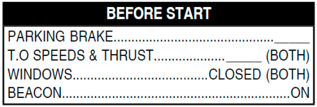
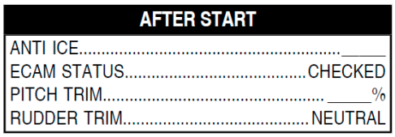

If this MEMO is not displayed but ground crew confirms that NWS Bypass Pin is in TOWING position, do not start engines while pushback to avoid possible nose landing gear damage upon green hydraulic pressurization. Ref to MEL (NWS Electrical Deactivation Box) for dispatch. In case of a power push, NWS selector should remain in normal position for steering.

Must be ON during all ground operation, when icing conditions (OAT/TAT < 10ºC with visible moisture) exist or are anticipated.
During ground operation in icing conditions with OAT +3ºC or less, carry out ice shedding procedure from PRO-NOR-SUP-ADVWXR - ENGINE OPERATIONS ON GROUND IN ICING CONDITIONS.
APU bleed not authorized for using wing anti ice. In icing conditions, wing anti-ice may be turned on to prevent ice accretion on the wing leading edge. It must be turned on if there is evidence of ice accretion, such as ice on the visual indicator, or on the wipers, or with the SEVERE ICE DETECTED alert. Ice accretion is considered severe when the ice accumulation on the airframe reaches approximately 5mm thick or more.
The checklist will be done after bypass pin sighted:
